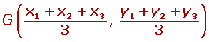

Resumen de vectores de un plano
Resumen de vectores en el plano
- Vectores
- Vectores equipolentes y libres
- Vectores en un plano
- Módulo de un vector y vector unitario
- Suma y resta de vectores
- Producto de vectores
- Puntos en los vectores
- Coordenadas del baricentro
- División de un segmento
Vectores
Un vector fijo  es un segmento orientado que va del punto A (origen) al punto B (extremo).
es un segmento orientado que va del punto A (origen) al punto B (extremo).
Vector nulo:
Un vector fijo es nulo cuando el origen y su extremo coinciden.
Módulo del vector:
Es la longitud del segmento AB, se representa por 
Dirección y sentido del vector:

Dirección de un vector:
Es la dirección de la recta que contiene al vector o de cualquier recta paralela a ella.
Sentido del vector: 
El que va del origen A al extremo B.
Vectores equipolentes y libres
Vectores equipolentes:

Dos vectores son equipolentes cuando tienen igual módulo, dirección y sentido.
Vectores libres

El conjunto de todos los vectores equipolentes entre sí se llama vector libre. Cada vector fijo es un representante del vector libre.
Vectores en un plano
1 Vector de posición de un punto en el plano de coordenadas
El vector  que une el origen de coordenadas O con un punto P se llama vector de posición del punto P.
que une el origen de coordenadas O con un punto P se llama vector de posición del punto P.
2 Coordenadas o componentes de un vector en el plano
Si las coordenadas de A y B son:


Las coordenadas o componentes del vector  son las coordenadas del extremo menos las coordenadas del origen.
son las coordenadas del extremo menos las coordenadas del origen.

Módulo de un vector y vector unitario
Módulo de un vector
El módulo de un vector es la longitud del segmento orientado que lo define.
El módulo de un vector es un número siempre positivo y solamente el vector nulo tiene módulo cero.
1 Cálculo del módulo conociendo sus componentes

2 Cálculo del módulo conociendo las coordenadas de los puntos

Vectores unitarios
Los vectores unitarios tienen de módulo la unidad.
Suma y resta de vectores
1 Suma de vectores

Para sumar dos vectores libres  y
y  se escogen como representantes dos vectores tales que el extremo de uno coincida con el origen del otro vector.
se escogen como representantes dos vectores tales que el extremo de uno coincida con el origen del otro vector.

Regla del paralelogramo
Se toman como representantes dos vectores con el origen en común, se trazan rectas paralelas a los vectores obteniéndose un paralelogramo cuya diagonal coincide con la suma de los vectores.
Para sumar dos vectores se suman sus respectivas componentes.


2 Resta de vectores

Para restar dos vectores libres  y
y  se suma
se suma  con el opuesto de
con el opuesto de  .
.
Las componentes del vector resta se obtienen restando las componentes de los vectores.


Producto de un número por un vector
El producto de un número k por un vector  es otro vector:
es otro vector:
1 De igual dirección que el vector  .
.
2 Del mismo sentido que el vector  si k es positivo.
si k es positivo.
3 De sentido contrario del vector  si k es negativo.
si k es negativo.
4 De módulo 
Las componentes del vector resultante se obtienen multiplicando por K las componentes del vector.

Puntos en los vectores
1 Coordenadas del punto medio de un segmento
Las coordenadas del punto medio de un segmento coinciden con la semisuma de las coordenadas de de los puntos extremos.
2 Condición para qué tres puntos estén alineados
Los puntos A (x1, y1), B(x2, y2) y C(x3, y3) están alineados siempre que los vectores tengan la misma dirección. Esto ocurre cuando sus coordenadas son proporcionales.
3 Simétrico de un punto respecto de otro

Si A' es el simétrico de A respecto de M, entonces M es el punto medio del segmento AA'. Por lo que se verificará igualdad:
Coordenadas del baricentro

Baricentro o centro de gravedad de un triángulo es el punto de intersección de sus medianas.
Las coordenadas del baricentro son:

División de un segmento en una relación dada
Dividir un segmento AB en una relación dada r es determinar un punto P de la recta que contiene al segmento AB, de modo que las dos partes, PA y PB, están en la relación r: